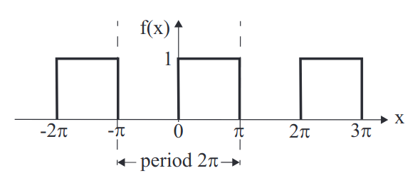
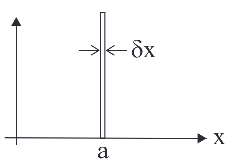
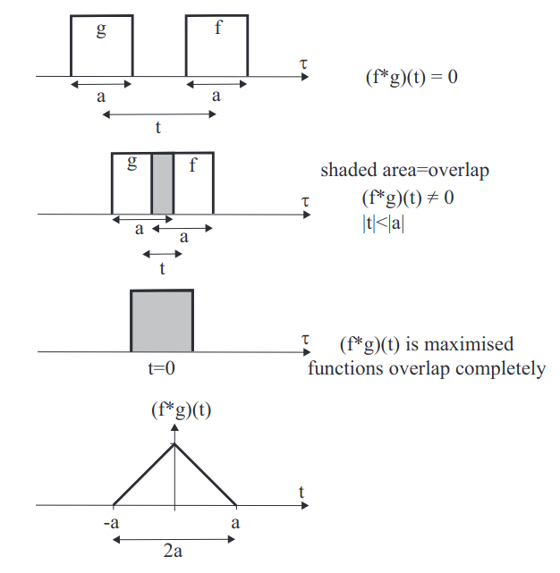

Many systems in physics involve oscillations or vibrations. The oscillations are often made up of a sum of fundamental modes of oscillations. In general, waves and vibrations are sums of simple sinusoidal waves/vibrations of different frequencies (i.e. ‘modes’). The best way to analyse such systems is therefore to expand the function describing the amplitude of oscillation or vibration as a sum of fundamental modes of oscillation. For example, consider a vibrating piano string. It can be considered to be a string of length \(L\) with fixed end points as boundary conditions.
The basic concept and foundation of the Fourier series is that any reasonable periodic function can be expressed as a summation over a set of harmonic modes. This periodic function could be a function of space, with the modes be defined by the wave-number \(k_n=n2\pi/ \lambda\) and where λ is the fundamental period (length) and \(n\) is an integer. The periodic function could be a function of time, with the modes be defined by the frequency \(f_n=n2\pi f_0=n2\pi/\tau\) and where \(\tau\) is the fundamental period (time). Indeed, the period function can be periodic in any variable \(\alpha\), and the corresponding ’harmonics’ will be related to the inverse \(\alpha^{-1}\). Fourier Transforms are the extension of the Fourier series to describe functions that are not periodic. Fourier Transforms are even more powerful than the Fourier series, that allow this technique to be applied to non periodic functions. We can use Fourier transforms for image data compression, or we can use them to find tiny signals hidden in noisy data.
A function \(f(x)\) is periodic with period \(L\) if \[f(x+L)=f(x).\] For example, cosine and sine are periodic functions, with \(L=2\pi\). Periodic functions can be defined by an interval of length \(L\) from \(x_0\) to \(x_0+L\) which repeats along the \(x\)-axis.
The basis of the Fourier series is that an arbitrary periodic function \(f(x)\), of period \(L\), can be written as a sum of the form \[f(x)=\frac{a_0}{2}+\sum^\infty_{r=1}\left[a_r\cos\left(\frac{2\pi rx}{L}\right)+b_r\sin\left(\frac{2\pi r x}{L}\right)\right].\] where the constant coefficients \(a_0\), \(a_r\) and \(b_r\) are known as the Fourier coefficients. In the summation \(r\) is an integer, and so we can see that the cosine and sine terms correspond to the oscillation with the fundamental period and all the harmonics of the period.
Let \(r\) and \(p\) be non-zero integers. Then \[\int^{x_0+L}_{x_0}\sin\left(\frac{2\pi rx}{L}\right)\cos\left(\frac{2\pi px}{L}\right)\;dx=0\;\;\forall(r,p)\]\[\int^{x_0+L}_{x_0}\cos\left(\frac{2\pi rx}{L}\right)\cos\left(\frac{2\pi px}{L}\right)\;dx=\frac{L}{2}\delta_{rp}=\left\{\begin{array}{l r}L/2&\textrm{for}\;\;r=p\\0&\textrm{for}\;\;r\neq p\end{array}\right.\] \[\int^{x_0+L}_{x_0}\sin\left(\frac{2\pi rx}{L}\right)\sin\left(\frac{2\pi px}{L}\right)\;dx=\frac{L}{2}\delta_{rp}\] This is proved by using the sums of only sine and cosine, then using trig addition identities.
The Fourier coefficients are given by \[\boxed{a_0=\frac{2}{L}\int^{x_0+L}_{x_0}f(x)\;dx,}\] \[\boxed{a_r=\frac{2}{L}\int^{x_0+L}_{x_0}f(x)\cos\left(\frac{2\pi rx}{L}\right)\;dx,}\] \[\boxed{b_r=\frac{2}{L}\int^{x_0+L}_{x_0}f(x)\sin\left(\frac{2\pi rx}{L}\right)\;dx.}\] We prove the relations for the Fourier coefficients by substituting the Fourier series for \(f(x)\), into them and using the orthogonality relations.

This is a function of period (\(L=\)) \(2\pi\) defined on the interval \([-\pi,\pi]\) by \[f(x)=\left\{\begin{array}{ll}1&\textrm{for}\;\;0\leq x\leq\pi\\0&\textrm{for}\;\;-\pi\leq x\leq0\end{array}\right.\] In comparison with our notation, we set \(x_0=−\pi,\;x_0+L =\pi,\;L=2\pi\). We can determine the Fourier coefficients: \[a_0=\frac{1}{\pi}\left\{\int^0_{-\pi}0\;dx\;+\int^\pi_01\;dx\right\}=1\]\[a_r=\frac{1}{\pi}\left\{\int^0_{-\pi}0\cos(rx)\;dx\;+\int^\pi_01\cos(rx)\;dx\right\}=\frac{1}{\pi r}\sin(r\pi)=0\] (since \(\sin(r\pi)=0\) for integer \(r\).) \[b_r=\frac{1}{\pi}\left\{\int^0_{-\pi}0\sin(rx)\;dx\;+\int^\pi_01\sin(rx)\;dx\right\}=\frac{1}{\pi r}[1-\cos(r\pi)]\] If we remember that \(r\) is an integer, we can find that \[\cos(r\pi)=(-1)^r.\] Hence, our Fourier coefficients are: \[\begin{array}{l}a_0=1\\a_r=0\\b_r=\frac{1}{\pi r}[1-(-1)^r]\end{array}\] or \[b_r=\left\{\begin{array}{l l}0&\textrm{for even}\;r\\\frac{2}{\pi r}&\textrm{for odd}\;r\end{array}\right.\] So, the Fourier series for this periodic step function is \[f(x)=\frac{1}{2}+\sum^\infty_{r=1}\frac{[1-(-1)^r]}{\pi r}\sin(rx)\] or \[f(x)=\frac{1}{2}+\sum^\infty_{\begin{array}{c}r=1\\r\;\textrm{odd}\end{array}}\frac{2}{\pi r}\sin(rx)\]Explicitly, the first few terms of the Fourier series are \[f(x)=\frac{1}{2}+\frac{2}{\pi}\sin(x)+\frac{2}{3\pi}\sin(3x)\] The infinite series is an exact representation of the periodic step function. It is possible to approximate the step function by including only a few terms in the series. As more terms are included, the approximation becomes more accurate.
Even and odd functions have the following symmetry properties with respect to reflection in the \(y\)-axis: \[\begin{array}{l l} \textrm{even}&\qquad f(-x)=f(x),\\ \textrm{odd}&\qquad f(-x)=-f(x). \end{array}\] Odd functions always pass through the origin \((x=0)\). This has relevance for Fourier series because \(\cos(x)\) is even and \(\sin(x)\) is odd. Thus, if you know that a given function is even or odd, then you know that its Fourier series can be dramatically simplified. Even functions only have cosines in their expansion, odd functions only have sines in their expansion \[\begin{array}{lcr}\textrm{even function} & \implies & b_r=0,\\\textrm{odd function} & \implies & a_0=a_r=0.\end{array}\] So, the calculation of Fourier coefficients is simplified.
So far, the periodic functions we have considered run along the whole \(x\)-axis. We often need the expansion for a function over some fixed length, e.g. a piano string of length \(D\). We can do this by extending the function to a periodic function of period \(L=2D\). We can choose either an odd or even extension, we usually choose one that will give the simplest expansion. Consider a function \(f(x)\) defined for \(0\leq x\leq D\). We can extend it with an odd extension into an odd periodic function of period \(2D\). Then, use the Fourier series for an odd function \((a_0=a_r=0)\): \[f(x)=\sum^\infty_{r=1}b_r\sin\left(\frac{2\pi rx}{L}\right);\qquad b_r=\frac{4}{L}\int_0^{L/2}f(x)\sin\left(\frac{2\pi rx}{L}\right)\;dx\] where \(L=2D\). This is the "sine half-range expansion". It gives a correct representation of the original function \(f(x)\) for values of \(x\) between \(0\) and \(D\). As for the odd extension, we only have \(b_r=0\), and \[f(x)=\frac{a_0}{2}+\sum^\infty_{r=1}a_r\cos\left(\frac{2\pi rx}{L}\right)\] with \[a_0=\frac{4}{L}\int^{L/2}_0f(x)\;dx,\qquad\qquad a_r=\frac{4}{L}\int^{L/2}_0f(x)\cos\left(\frac{2\pi rx}{L}\right)\;dx.\]where \(L=2D\).
When \(x=\textrm{length}\), the Fourier series \(f(x)\) of period \(L\) can be viewed as a sum of sines and cosines of different wavelengths. A sine function of wavelength \(\lambda\) has the form \(\sin(2\pi x/\lambda)=\sin(kx)\) where \(k=2\pi/\lambda\) is the wavenumber. So the Fourier series may be written as \[f(x)=\frac{a_0}{2}+\sum^\infty_{r=1}[a_r\cos(k_rx)+b_r\sin(k_rx)];\qquad\qquad k_r=\frac{2\pi r}{L}\] This is a sum of modes of different wavelengths \(\lambda_r=2\pi/k_r=L/r\).
When \(f=f(t)\), with period \(T\), the Fourier series can be viewed as a sum of sines and cosines of different angular frequency, \(\sin(2\pi/T)=\sin(\omega t)\) where \(\omega=2\pi f, f=1/T\). So the Fourier series may be written as \[f(t)=\frac{a_0}{2}+\sum^\infty_{r=1}[a_r\cos(\omega_rt)+b_r\sin(\omega_rt)];\qquad\qquad\omega_r=\frac{2\pi r}{T}\]
Complex Fourier series are also called “Fourier exponential series”. Since the Fourier series is a sum of sines and cosines, we can use Euler’s formula to express the Fourier series more compactly. The complex Fourier series expansion of a function \(f(x)\) is \[f(x)=\sum^\infty_{r=-\infty}c_r\exp\left(\frac{2\pi irx}{L}\right)=\sum^\infty_{r=-\infty}c_r\exp\left(ik_rx\right);\qquad k_r=\frac{2\pi r}{L}.\] where the Fourier coefficients are \[c_r=\frac{1}{L}\int^{x_0+L}_{x_0}f(x)\exp(-\frac{2\pi irx}{L})\;dx.\]Although \(f(x)\) is real, the coefficients \(c_r\) are generally complex.
We can show that this representation is equivalent to the real Fourier series. \[\begin{array}{l}a_r\cos(k_rx)=\frac{a_r}{2}e^{ik_rx}+\frac{a_r}{2}e^{-ik_rx}\\b_r\sin(k_rx)=-\frac{ib_r}{2}e^{ik_rx}+\frac{ib_r}{2}e^{-ik_rx}\\\end{array}\] This implies \[f(x)=\underbrace{\frac{a_0}{2}}_{=c_0}+\sum^\infty_{r=1}e^{ik_rx}\underbrace{\left(\frac{a_r}{2}-\frac{ib_r}{2}\right)}_{=c_r\;\textrm{for}\;r\gt 0}+\sum^\infty_{r=1}e^{-ik_rx}\underbrace{\left(\frac{a_r}{2}+\frac{ib_r}{2}\right)}_{=c_r\;\textrm{for}\;r\lt 0}\] \[\implies f(x)=\sum^\infty_{-\infty}c_re^{ik_rx};\qquad(c_{-r}=c^*_r);\qquad k_r=\frac{2\pi r}{L}.\] \[c_r=\frac{1}{2}(a_r-ib_r)=\frac{1}{L}\int^{x_0+L}_{x_0}f(x)e^{-ik_rx}\;dx\] Note, \(C_r\in\mathbb{C}\), whereas \(a_r,b_r\in\mathbb{R}\).
The DDMO, is a differential equation of the form \[\underbrace{m\ddot{x}}_\textrm{position}+\underbrace{\gamma\dot{x}}_\textrm{damping}+\underbrace{kx}_\textrm{hookes}=\underbrace{F(t)}_\textrm{driving}\] where the driving force \(F(t)\) is given. The general solution of this equation may be written as \[x(t)=x_c(t)+x_p(t),\] where the complimentary function \(x_c\) is the general solution of the homogeneous equation (\(F(t)=0\)) and \(x_p\) is a paticular solution related to \(F(t)\). The particular solution describes steady state solutions - how the system behaves after a long (infinite) time - and this will be our main focus here. For completeness, however, we will also briefly mention the complementary function \(x_c\). For a damped oscillator, the complementary function decays to zero after a finite time - these solutions are called transients. The transient solutions also depend on initial or boundary conditions. To find them, consider a trial solution of the form \(x=e^{\lambda t}\). \[\implies x_c=Ae^{\lambda_1t}+Be^{\lambda_2t},\quad\textrm{where}\quad(m\lambda_n^2+\gamma\lambda_n+k)=0\] For \(\lambda_1=\lambda_2\), we have \[x_c=(A+Bt)e^{\lambda t}\qquad\lambda=-\frac{\gamma}{2m}\] The roots may be complex. For the form \(\lambda=a\pm ib\) we have the solution \[x_c=e^{at}(Ae^{ibt}+Be^{-ibt})\] Furthermore the dimensionless damping ratio is given by \[\zeta=\frac{\gamma}{2m\omega_0}.\] Provided that we can expand \(F(t)\) as a Fourier series, then we can:
Let's consider \(F(t)=e^{i\omega_rt}\):\[m\ddot{x}+\gamma\dot{x}+kx=e^{i\omega_rt}.\] We shall use a trial solution \[x_r(t)=x_{0r}e^{i\omega_rt},\] where \(x_{0r}\) is complex. We use the subscript \(r\) to remind us that this is a solution for one mode \(r\) with frequency \(\omega_r\). Thus \[-m\omega_r^2x_{0r}e^{i\omega_rt}+i\gamma\omega_rx_{0r}e^{i\omega_rt}+kx_{0r}e^{i\omega_rt}=e^{i\omega_rt}\] We can divide by \(e^{i\omega_rt}\) rearrange, and then use \(\frac{1}{a+ib}=\frac{a-ib}{a^2+b^2}\)to retrieve \[x_{0r}=\frac{1}{-m\omega_r^2+i\gamma\omega_r+k}=\frac{k-m\omega_r^2-i\gamma\omega_r}{(k-m\omega_r^2)^2+\gamma^2\omega_r^2}.\] We can use the natural frequency \(k=m\omega^2_0\) to find \[x_{0r}=\frac{1}{m}\frac{\omega^2_0-\omega_r^2-i(\gamma/m)\omega_r}{(\omega^2_0-\omega_r^2)^2+(\gamma/m)^2\omega_r^2}.\] Now we can use superposition to write down the solution for the general case: \[F(t)=\sum^\infty_{r=-\infty}c_re^{i\omega_rt}\] \[x(t)=\sum^\infty_{r=-\omega}c_rx_r(t)\]
The average value of the square of a periodic function of period \(L\) is given by \[\langle f^2(x)\rangle=\frac{1}{L}\int^{x_0+L}_{x_0}f^2(x)\;dx\] Applied to the real Fourier series we get \[\langle f^2(x)\rangle=\frac{a^2_0}{4}+\frac{1}{2}\sum^\infty_{r=1}(a_r^2+b_r^2),\] and for the complex Fourier series we get \[\langle f^2(x)\rangle=\sum^\infty_{r=-\infty}|c_r|^2.\]
We will generalise the real Fourier series to the case of non-periodic functions. Suppose there is a periodic function \(f(x)\), with period \(L\), that can be written as a Fourier series. What happens as \(L\to\infty\)? We have \[\boxed{f(x)=\int^\infty_0[A(k)\cos(kx)+B(k)\sin(kx)]\;dk}\] With \[\begin{align} &A(k)=\frac{1}{\pi}\int^\infty_{-\infty}f(x)\cos(kx)\;dx\\ &B(k)=\frac{1}{\pi}\int^\infty_{-\infty}f(x)\sin(kx)\;dx \end{align}\]
The above series also has a complex form: \[\boxed{\begin{array}{ll} \textrm{F.T:}&\qquad\tilde{f}(k)=\frac{1}{\sqrt{2\pi}}\int^\infty_{-\infty}f(x)e^{-ikx}dx\\ \textrm{Inverse F.T:}&\qquad f(x)=\frac{1}{\sqrt{2\pi}}\int^\infty_{-\infty}\tilde{f}(k)e^{ikx}dx\\ \end{array}}\] By convention we use \(x\) and \(k\) space, but we also frequently use time \(t\) and frequency \(\omega\).
Properties of the Dirac delta function:
We can think of the delta function as a ‘spike’ of unit area and infinitesimal width, with \(\delta(x−a)\) centred at \(x=a\).

Since \(\delta(x−a)\) is zero everywhere except \(x=a\), the Dirac delta function picks out the value of the rest of the integrand at \(x=a\): \[\int^\infty_{-\infty}f(x)\delta(x-a)\;dx=f(a)\] The integration "sweeps" across the function, and the delta function sets the integrand equal to zero everywhere except \(x=a\), meaning the integral becomes a single value at \(a\).
We use the derivative property a lot to simplify DEs.
For function \(u(x, t)\), the one-dimensional wave equation is \[\frac{\partial^2u}{\partial x^2}=\frac{1}{c^2}\frac{\partial^2u}{\partial t^2}\]where c is the speed of the wave. We will show that the general solution has the form\[u(x,t)=f(x−ct)+g(x+ct)\] where f and g are arbitrary functions of a single variable representing ‘left-moving’ and ‘right-moving’ waves with speed \(c\). \[\tilde{F}\left[\frac{\partial^2u}{\partial x^2}\right]=(ik)^2\tilde{u}(k,t);\qquad\tilde{F}\left[\frac{1}{c^2}\frac{\partial^2u}{\partial t^2}\right]=\frac{1}{c^2}\frac{\partial^2\tilde{u}(k,t)}{\partial t^2}\] Using these we find that \[-c^2k^2\tilde{u}=\frac{\partial^2\tilde{u}}{\partial t^2}\implies\tilde{u}=\tilde{f}(k)e^{ikct}+\tilde{g}(k)e^{-ikct},\]where \(\tilde{f}(k)\) and \(\tilde{g}(k)\) are unknown functions of \(k\). To find the needed solution \(u(x,t)\), we use the inverse Fourier transform \[\begin{align}u(x,t)\quad=\quad&\frac{1}{\sqrt{2\pi}}\int^\infty_{-\infty}\tilde{u}(k,t)e^{ikx}\;dx\\ =\quad&\frac{1}{\sqrt{2\pi}}\int^\infty_{-\infty}\left[\tilde{f}(k)e^{ik(x+ct)}+\tilde{g}(k)e^{ik(x-ct)}\right]\;dk\\ =\quad&f(x+ct)+g(x-ct)\end{align}\] where \(f(x)\) and \(g(x)\) are the inverse Fourier transforms of \(\tilde{f}(k)\) and \(\tilde{g}(k)\).
We can set some initial conditions (at time \(t=0\)): \[u(x,0)=\phi(x);\qquad\left.\frac{\partial u}{\partial t}\right|_{t=0}=\psi(x)\] This can be thought of as a string of infinite length with an initial shape \(\phi(x)\) and initial velocity \(\psi(x)\). First we find the general solution for \(\tilde{u}\) (as detailed above): \[\tilde{u}(k,t)=\tilde{f}(k)e^{ikct}+\tilde{g}(k)e^{-ikct}\] Lets first consider \(u(k,0)\):\[\begin{align} &\tilde{u}(k,0)=\tilde{\phi}(k)\\ &\tilde{u}(k,0)=\tilde{f}(k)+\tilde{g}(k)\\ &\implies\tilde{\phi}(k)=\tilde{f}(k)+\tilde{g}(k) \end{align}\] Next, consider \(\partial u(x,0)/\partial t=\psi(x)\): \[\begin{align}&\frac{\partial\tilde{u}}{\partial t}=ikc\tilde{f}e^{ikct}-ikc\tilde{g}e^{-ikct}\\ \textrm{@}t=0:\quad &\tilde{\psi}(k)=ikc(\tilde{f}(k)-\tilde{g}(k)) \end{align}\] We can now use both of these equations to find \(\tilde{f}\) and \(\tilde{g}\): \[\begin{align} &\tilde{f}(k)=\frac{1}{2}\tilde{\phi}(k)+\frac{1}{2}\frac{1}{ikc}\tilde{\psi}(k)\\ &\tilde{g}(k)=\frac{1}{2}\tilde{\phi}(k)-\frac{1}{2}\frac{1}{ikc}\tilde{\psi}(k) \end{align}\] thus: \[\tilde{u}(k,t)=\frac{\tilde{\phi}(k)}{2}\left[e^{ikct}+e^{-ikct}\right]+\frac{\tilde{\psi}(k)}{2ikc}\left[e^{ikct}-e^{-ikct}\right]\]we can express the right term as a result of an integral: \[\tilde{u}(k,t)=\frac{\tilde{\phi}(k)}{2}\left[e^{ikct}+e^{-ikct}\right]+\frac{\tilde{\psi}(k)}{2}\int^t_0\left[e^{ikct'}-e^{-ikct'}\right]\;dt'\]next we can expand the functions into the brackets, the apply the inverse transform (using the shifting formula): \[u=\frac{1}{2}\left[\phi(x+ct)+\phi(x-ct)\right]+\frac{1}{2}\int^t_0[\psi(x+ct')+\psi(x-ct')]\;dt'\] we can use a substitution \(s=x+ct'\) to recover d'Alembert's solution: \[u(x,t)=\frac{1}{2}\left[\phi(x+ct)+\phi(x-ct)\right]+\frac{1}{2c}\int^{x+ct}_{x-ct}\psi(s)\;ds\]
The convolution \(f*g\) of two function \(f(x)\) and \(g(x)\) is defined as \[(f*g)(x)=\int^\infty_{-\infty}f(p)g(x-p)\;dp.\] It can also be written as \[(f*g)(x)=\int^\infty_{-\infty}f(x-p)g(p)\;dp.\]It’s possible to think of convolution as an overlap as two functions ‘pass’ through each other. Consider two square pulse functions \(f(\tau)\) and \(g(t−\tau)\): \[(f*g)(t)=\int^\infty_{-\infty}f(\tau)g(t-\tau)\;d\tau\] As \(t\) changes, the integrated area over \(\tau\) from \(−\infty\) to \(\infty\) changes, resulting in a triangular-shaped convolution \((f*g)(t)\).

.
The convolution theorem says that the Fourier transform of a convolution of two functions \(f,\;g\) is the product of Fourier transforms of each function. \[\tilde{F}[(f*g)(x)]=\sqrt{2\pi}\tilde{F}[f(x)]\tilde{F}[g(x)]=\sqrt{2\pi}\tilde{f}(k)\tilde{g}(k)\] The converse is also true: The Fourier transform of the product of two functions is the convolution of the Fourier transform of each function. \[\tilde{F}[f(x)g(x)]=\frac{1}{\sqrt{2\pi}}\tilde{F}[f(x)]*\tilde{F}[g(k)]=\frac{1}{\sqrt{2\pi}}\left(\tilde{f}*\tilde{g}\right)(k)\]
We can say that the current of particles passing over a boundary is proportional to the number of particles near the boundary \[J_{L\to R}\propto\rho_\textrm{L}.\] We also can say that the net current from left to right is \[J_{L\to R}-J_{R\to L}\] which depends on the difference of density across the boundary. Suppose we have \(n\) molecules (or particles) per unit volume, and that the total number is conserved. We define flux \(\mathbf{J}\) as the number of molecules crossing a unit area per unit time.For a plane of unit area, with a normal in the \(x\)-direction, we expect transport through the area to be proportional to the local concentration gradient, i.e. in the \(x\)-direction due to diffusion, \[\textrm{Fick's Law:}\qquad J_x=-D\frac{\partial n}{\partial x}=-D\nabla n\] where \(D\) is the diffusion coefficient and the negative sign indicates that the flow is from a region of high concentration to a region of low concentration. Next, consider a slab of width \(dx\) and cross-sectional area \(A\). We want conservation of no. molecules: \[\implies \frac{dN}{dt}=A(J_x(x)-J(x+dx))\] where \(N=nA\;dx\) is the number of particles in the slab. We use the Taylor expansion \(J(x+dx)=J_x(x)+\frac{\partial J_x(x)}{\partial x}dx\) \[\frac{dN}{dt}=A\frac{\partial n}{dt}dx=-A\frac{\partial J_x(x)}{\partial x}dx\] Simplifying... \[\implies\frac{\partial n}{dt}=-\frac{\partial J_x(x)}{\partial x}=-\nabla\cdot\mathbf{J}\qquad\textrm{number cons. eqn. }\] We now apply Fick's law: \[\frac{\partial n}{dt}=D\frac{\partial^2n}{\partial x^2}=D\nabla^2n\qquad\textrm{diffusion equation}\]we perform a F.T. in \(x\to k\) \[\tilde{n}(k,t)=\frac{1}{\sqrt{2\pi}}\int^\infty_{-\infty}n(x,t)e^{-ikt}\;dx\] so \[\frac{\partial}{\partial t}\tilde{n}=-k^2D\tilde{n}\implies\frac{1}{\tilde{n}}\frac{\partial\tilde{n}}{\partial t}=-k^2D\] we solve this by integration by \(t\) \[\begin{align} &\ln\tilde{n}=-k^2Dt+C(k)\\ &\implies\tilde{n}=A(k)e^{-k^2Dt} \end{align}\] Now use the initial condition, \(\tilde{n}(k,t),\;@t=0\) : \[\begin{align}&\implies\tilde{n}(k,0)=A(k)\\&\tilde{n}(k,t)=\tilde{n}(k,0)e^{-k^2Dt}\end{align}\]rewrite \[\tilde{n}(k,t)=\sqrt{2\pi}\;\tilde{n}(k,0)\frac{e^{-k^2Dt}}{\sqrt{2\pi}}\] and then use convolution thm. \[\tilde{F}[(f*g)(x)]=\sqrt{2\pi}\tilde{f}(k)\;\tilde{g}(k)\] we let \(\tilde{f}(k)=\tilde{n}(k,0)\) and \(\tilde{g}(k,t)=\frac{e^{-k^2Dt}}{\sqrt{2\pi}}\). We can deduce that \(f(x)=n(x,0)\) and \[g(x,t)=\frac{1}{2\pi}\int^\infty_{-\infty}e^{-k^2Dt}e^{ikx}dk=\frac{e^{-{x^2/4Dt}}}{\sqrt{4\pi Dt}}\] (using some tricks and the Gaussian integral) so therefore \[n(x,t)=n(x,0)*g(x,t)=\int^\infty_{-\infty}n(x',0)g(x-x',t)\;dx'\] We could consider the example \(n(x,0)=\delta(x-a)n_0\) \[\begin{align} n(x,t)&=\frac{n_0}{\sqrt{4\pi Dt}}\int\delta(x'-a)e^{-(x-x')^2/4Dt}dx'\\ &=\boxed{\frac{n_0}{\sqrt{4\pi Dt}}e^{-(x-a)^2/4Dt}} \end{align}\]
Consider the three-dimensional diffusion equation. \[\frac{\partial n}{\partial t}=D\nabla^2n\]Steady state solutions are constant in time \(\partial n/\partial t=0\), giving \(D\nabla^2n=0\) and \[\textrm{Laplace's equation:}\qquad \nabla^2n(x,y)=0.\] Laplace’s equation is very common in physics. For example, in electrostatics Poisson’s equation \(\nabla^2V=−\rho/\epsilon_0\) relates scalar potential \(V\) to charge density \(\rho\) and, in a region of space with no charge density, this reduces to Laplace’s equation \(\nabla^2V=0\). Here, we want to solve for cases where \(n\) is known at the boundaries of a region of space, and thus find the steady state solution \(n(x,y,z).\) Let \(n(x,y)=X(x)Y(y)\): \[\implies\frac{1}{X}X''=-\frac{1}{Y}Y''=\ell^2 \;(\textrm{constant})\] assume \(\ell^2\gt 0\): \[\begin{align} &X=Ae^{\ell x}+Be^{-\ell x}\\ &Y=C\cos(\ell y)+D\sin(\ell y) \end{align}\] Hence, General Solution: \[n(x,y)=XY=[Ae^{\ell x}+Be^{-\ell x}][C\cos(\ell y)+D\sin(\ell y)]\] We now need to apply boundary conditions to figure out \(ABCD\).
We have \[\begin{align} &n(x,0)=n(x,a)=n(0,y)=0\\ &n(a,y)=n_0\sin(\pi y/a) \end{align}\]
So we finally get that \[\boxed{n(x,y)=\frac{n_0}{\sinh(\pi)}\sinh\left(\frac{\pi x}{a}\right)\sin\left(\frac{\pi y}{a}\right)}\] Note that we assumed \(\ell\in\mathbb{R}\;(l ^2\gt 0)\), we didn't need to make this assumption and could have instead used the boundary conditions to tell us that this is the case.